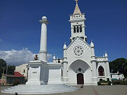
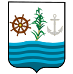
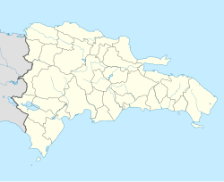

San Pedro de Macorís
municipio de la República Dominicana
- Idioma
- Descargar en PDF
- Vigilar
- Editar
Este artículo o sección tiene referencias, pero necesita más para complementar su verificabilidad.
San Pedro de Macorís es un municipio de la República Dominicana, capital de la provincia homónima, situado en la región Este del país.[3] Conocido como la "Cuna de la Poesía" y el "Granero del Béisbol", ha sido históricamente un importante centro económico y cultural.[4] Su crecimiento se consolidó a finales del siglo XIX y principios del XX con la expansión de la industria azucarera, atrayendo una diversidad de inmigrantes que influyeron en su desarrollo social y cultural.[5]
San Pedro de Macorís
Entidad subnacional

Catedral de San Pedro Apóstol

Escudo
- Otros nombres: Sultana del Este, La Ciudad de los Bellos Atardeceres, Macorís del Mar, San Pedro, Ciudad del Espíritu Santo
- Lema: "Tierra de Peloteros y Poetas" y "Donde Todo Comenzó"

Localización de San Pedro de Macorís en República Dominicana
- Coordenadas: 18°27′26″N 69°18′22″O / 18.457222, -69.306111
- Idioma oficial: Español
- Entidad: Municipio de la República Dominicana y Ciudad
- País: República Dominicana
- Ing. Raymundo Ortiz
- Provincia: San Pedro de Macorís
- Distritos Municipales: 1
Eventos históricos
- Fundación: 10 de septiembre de 1882
- Creación: 9 de septiembre de 1907
Superficie
Altitud
Clima
Población (2022)
- Total 217 523 hab.[2]
- Densidad
- 1 480 hab./km²
- Urbana 207 378 hab.
Gentilicio
Huso horario
- Tiempo del Atlántico
- UTC-4
Código postal
Prefijos telefónicos
- (809+529, 809+246, 809+526)
Fiestas mayores
- 29 de junio (día de San Pedro Apóstol)
Patrono(a)
[editar datos en Wikidata]